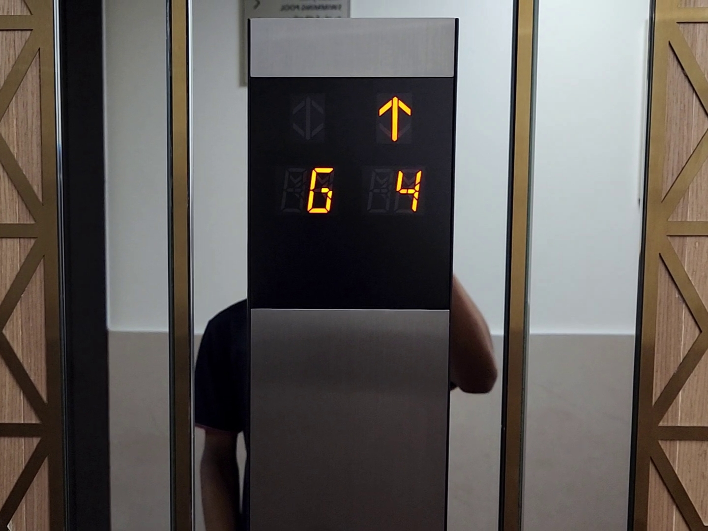
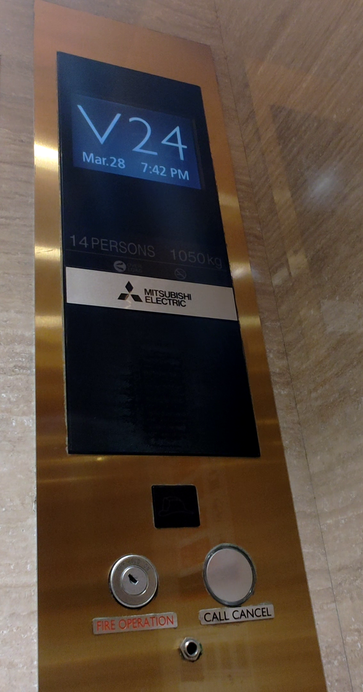
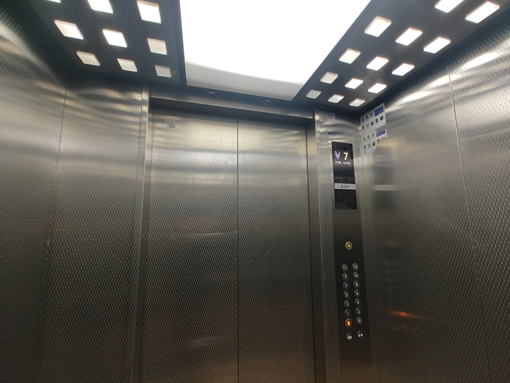
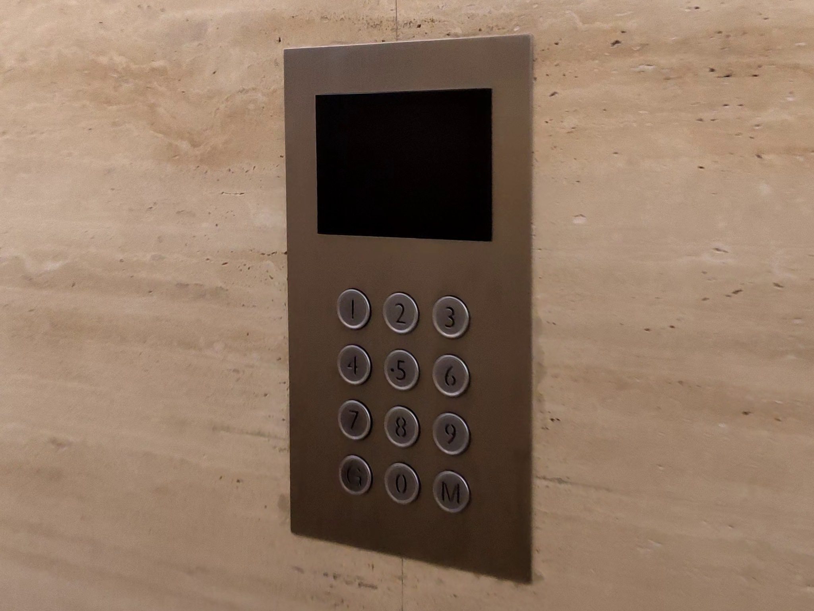
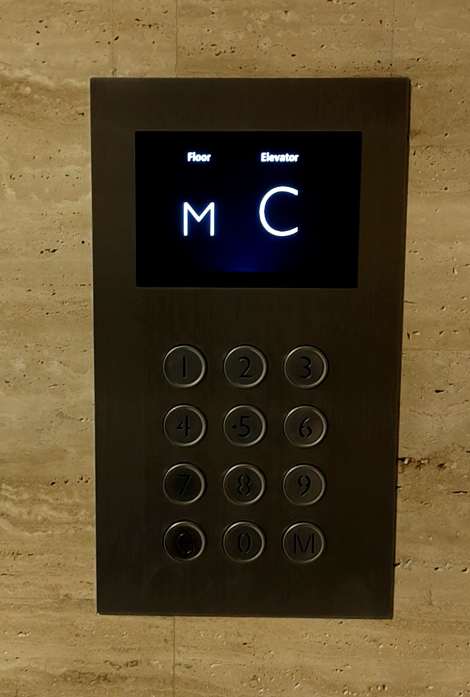

In 2013, Mitsubishi gave a major overhaul to its fixtures, including:
NEXIEZ is Mitsubishi's current offering of traction lifts for low and mid-rise solutions. Introduced in 2010; it is available in a compact machine-room variant (NEXIEZ-MR) as well as an machine-room-less variant (NEXIEZ-MRL).
|
Exterior of a NEXIEZ-MRL in simplex using the new fixtures.
This lift uses the "glass" variant of the hall station. |
New Mitsubishi fixtures.
This one uses the blue-illuminated buttons; as well as the new segmented display. |
| Interior of a NEXIEZ-MRL. | |
|  | |
|
Surface-mounted duplex hall call station.
This one uses the blue illumination for the buttons. |
Close up of the segmented indicators on an hall call station. |
| Interior of another NEXIEZ-MRL. |
| Hall call station with white illumination for the buttons. |
Hall position indicator with segmented display.
mounted above the landing. |

|
|
|
A set of NEXIEZ-MRs in duplex; with "glass" style hall station with segmented LED display.
The "glass" styles of hall stations were discontinued by Mitsubishi in 2018. |
A set of 4 NEXIEZ-MRs. |

|
|
| Interior of a Mitsubishi NEXIEZ-MR. | Interior of a Mitsubishi NEXIEZ-MR with a different ceiling style. |
|
Car station with basic segmented LED display
and white-illuminated buttons. |
Car station with the second-generation LCD display
and white-illuminated buttons. |

|
|
|
Car station mounted on the front return panel.
This lift uses a segmented display alongside orange-illuminated buttons. |
|
| Side-mounted car station. |
The NexWay series of high-rise lifts also got the new fixtures, including a new version of the smaller button variant.

|

|
| New Mitsubishi hall lanterns on a high-rise NexWay, both mounted on the transom panel. | |

|
 |
|
New style of Mitsubishi small buttons,
often found on high-rise installations. |
Second-generation LCD display. |
| This lift serves 43 floors above ground; and goes around 4 m/s. | |
The present-day installations of ELEMOTION, Mitsubishi's solution for lift modernisations, use the new Mitsubishi fixtures also found on NEXIEZ and NexWay lifts.
Also, since 2021, ELEMOTION allows for speeds upto 6 m/s, thus making it applicable for both low-, mid- and high-rise solutions; replacing the former NexWay Modernization for high-rise lift modernisation.
| Two ELEMOTION lifts in duplex. | Second-generation LCD display. |
| Car interiors. |
| ELEMOTION lifts in duplex. |
Surface-mounted simplex hall call station.
This one uses the standard-issue orange illumination for the buttons. |
|  | |
| Car interiors. | |
| Car panel with first-generation LCD display and orange buttons. |
Destination Oriented Allocation System (DOAS) is Mitsubishi's implementation of a destination dispatch system for lifts.
A destination dispatch system, such as DOAS, Schindler's PORT (formely Miconic 10), Kone's Polaris or Otis' Compass system,
allocates passengers to cars depending on destination floors selected by them.
Keypads are present in each landing; from which passengers select their destination.
DOAS is available as an optional feature for all of Mitsubishi's lifts, including NEXIEZ, NexWay as well as ELEMOTION.
|  |  |
| Mitsubishi DOAS keypad. | |